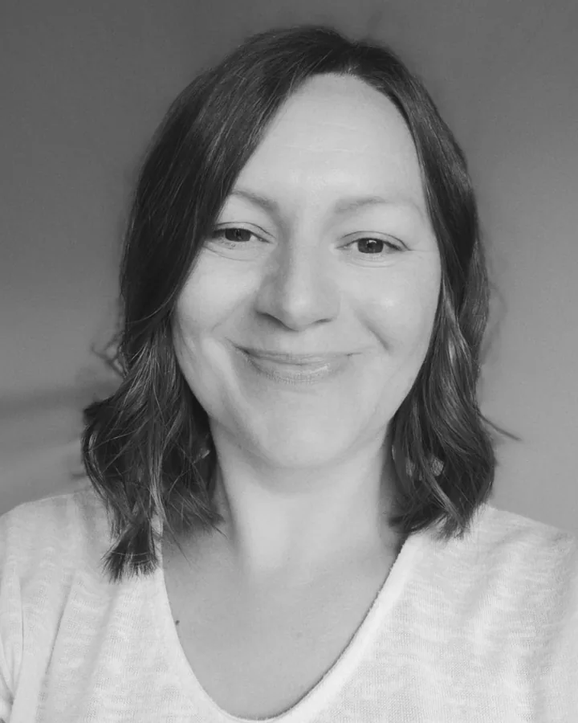
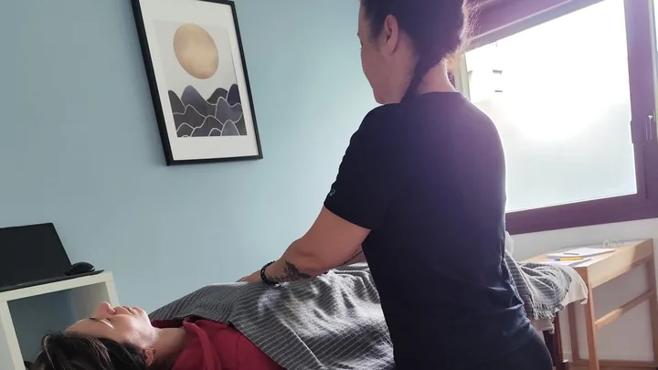

À propos
Je suis Delphine.
J'ai créé Espace ONE pour les femmes qui tiennent tout, et qui n'ont plus d'espace pour elles.

Pourquoi Espace ONE
Espace ONE est né d'un besoin : celui de créer un lieu où l'on peut se rassembler, se recentrer, redevenir une.
ONE, c'est l'unité.L'unité intérieure.L'unité du corps et du système nerveux.L'unité entre ce que l'on ressent et ce que l'on vit.
C'est un espace pour revenir à soi. Un espace pour respirer. Un espace pour se retrouver.

Mon chemin
J'ai découvert les approches somatiques à un moment où je cherchais moins de lutte et plus de paix intérieure. Au fil des années, j'ai constaté combien le retour au corps pouvait transformer notre manière de vivre le stress, les émotions et les défis du quotidien.
Aujourd'hui, j'accompagne les personnes qui souhaitent emprunter ce chemin à travers des expériences simples, concrètes et profondément humaines.
Certaines viennent avant tout pour souffler, ralentir et prendre soin d'elles. D'autres découvrent des pratiques qu'elles souhaitent intégrer dans leur quotidien ou partager avec leur conjoint, leurs enfants, leurs proches ou dans leur activité professionnelle.
C'est pourquoi je propose à la fois des accompagnements individuels, des expériences de groupe et des temps d'initiation à des pratiques corporelles simples, accessibles et respectueuses du rythme de chacun.
Mon approche relie
- la finesse du geste
- la compréhension du système nerveux
- la présence
- la lenteur
Instructrice agréée LemniWave® et Micro Massage®
Je ne cherche pas à « faire ». Je crée les conditions pour que le corps retrouve sa capacité naturelle de régulation.
Mon intention est la même dans chacun de ces espaces : vous permettre de vivre une expérience concrète, de développer votre autonomie et de retrouver une relation plus sereine à votre corps.
Transmettre cette approche fait partie intégrante de mon travail. Former exige précision et intégrité. Les transmissions
Le premier pas
Un appel découverte, gratuit, 30 minutes.
Pour faire le point sur ce que vous vivez et sentir ensemble quel espace est juste pour vous. Rien à préparer, rien à réussir.